BNI GoaDesign case study · 6 min read
Meet the chapter. Know how to take part.
A one-page website concept for BNI Victory, a business-networking chapter in Goa. The page moves from what the chapter is for, to who is in it, to how to ask for an invitation.
- Role
- Information hierarchy and website visual design
- Team
- Solo
- Timeline
- 2023
- Why
- A brief I set myself: a website for a local business-networking chapter
- Platform
- Desktop web page, designed 1920 px wide
- Scope
- One long page: invitation, purpose, people and contact. Sample content in the people cards
- Status
- Design concept. Not built, tested or launched
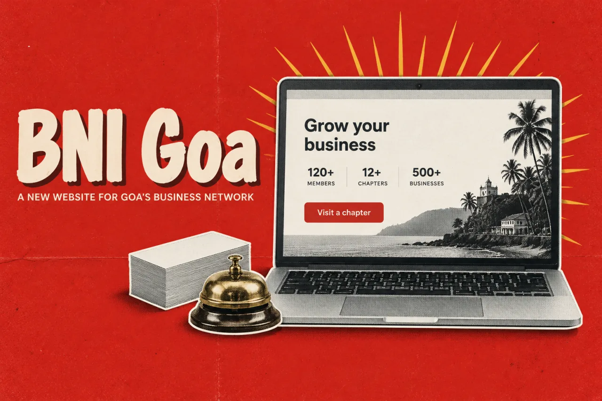
In short
- The problem: a business owner hearing about a networking chapter wants to know what it is for, who is in it, and how to take a first step.
- What I did: I designed one long page with an invitation at the top, the chapter's purpose, two kinds of people cards and a contact form.
- The key idea: let people carry the page. Leaders and members take up 46% of its length.
- Where it stands: a 2023 concept with no research behind it. The people cards hold sample content, and the worldwide BNI numbers in the About text are not results of this project.
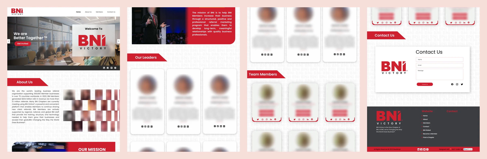
01 The brief
I set myself a brief: make a first visit feel possible
This was a brief I set myself. I did no interviews and no testing, so this page is about the design and nothing else.
I pictured a business owner who has just heard of the chapter. I assumed they would ask three things, in this order, and I put the page in the same order. The questions are my assumption, not a research finding.
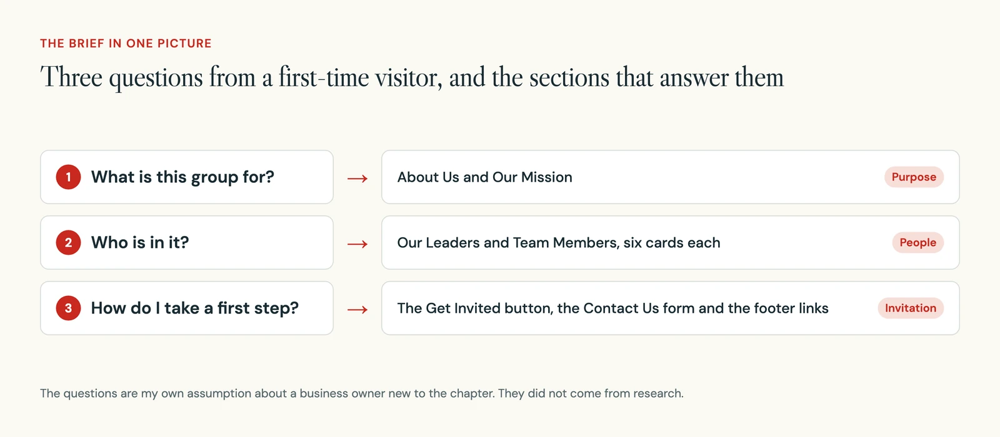
02 Page structure
One page in nine bands, and nearly half of it is people
The concept is a single page, 1920 px wide and 9919 px tall. The four links in the navigation match its main parts. The two people sections are the largest. Together they fill 46% of the page, more than purpose and contact combined.
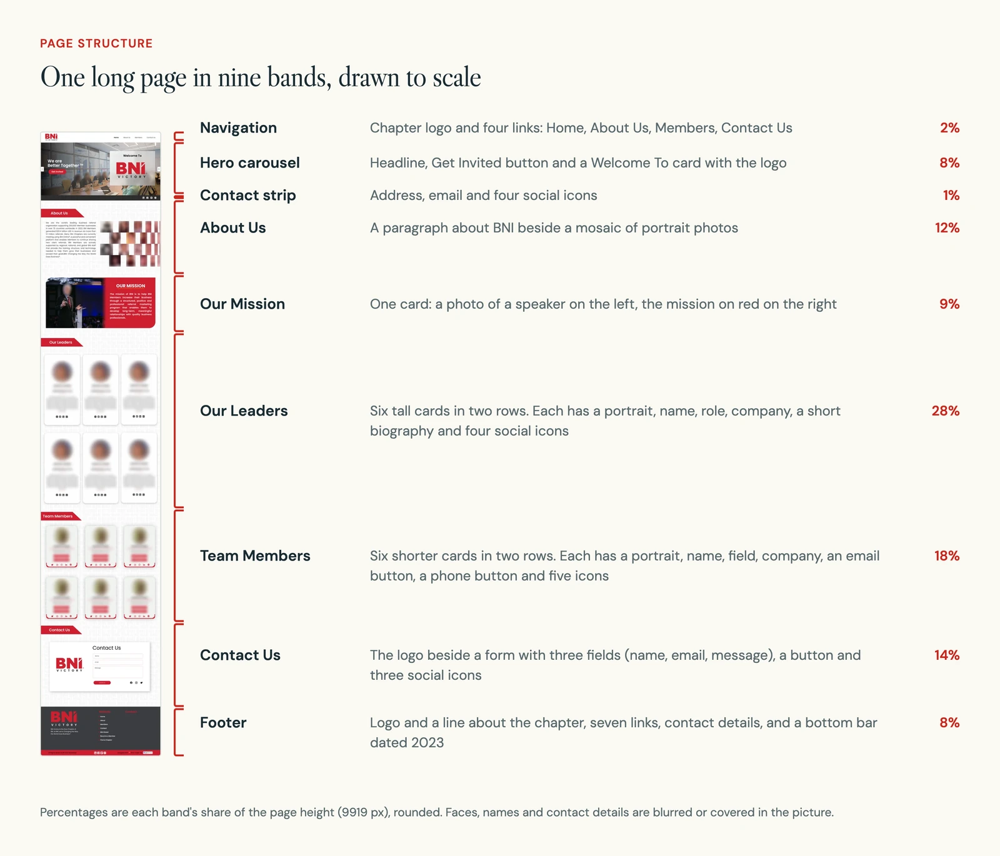
03 The first screen
The first screen makes one offer: get invited
The hero, the large opening area of a page, has one button. It says Get Invited, not Join. An invitation to visit is a smaller step than signing up, so it is an easier first thing to ask for.
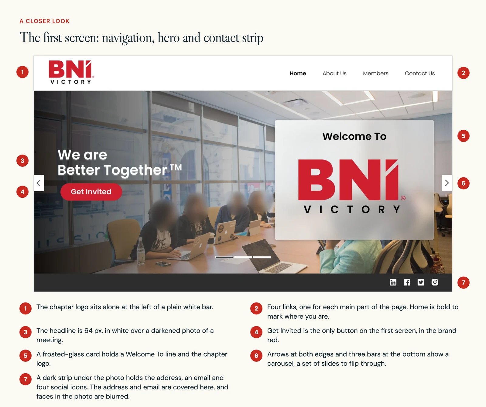
The trade-off is that the button promises something the concept does not show. The next screen would have to explain what a visit involves and who can come.
04 Purpose
Purpose comes before people
Two sections explain what the chapter is for. About Us sets a paragraph beside a mosaic of portraits. Our Mission is a single card, half photo and half red, with the mission in large white type.
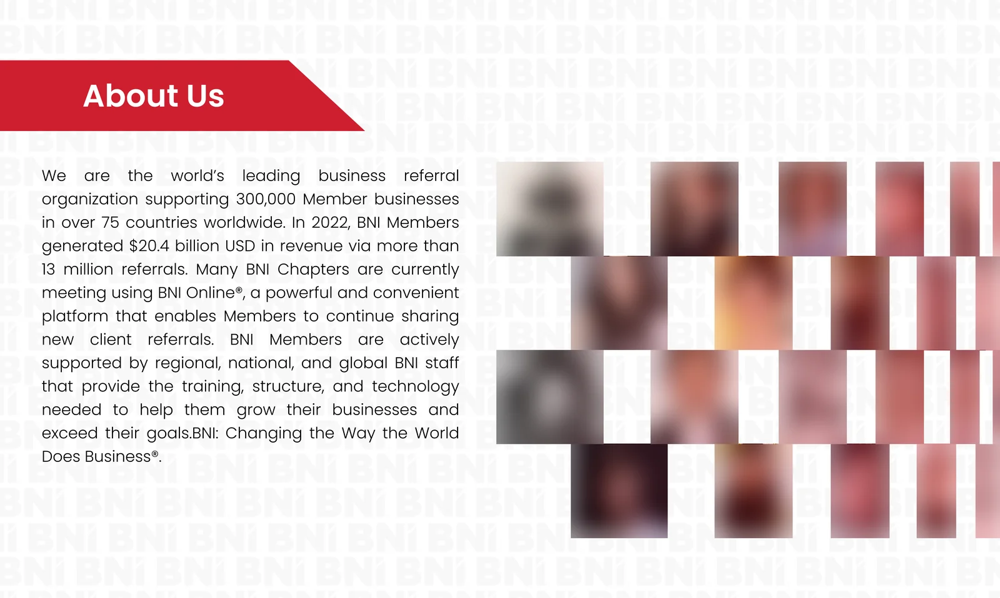
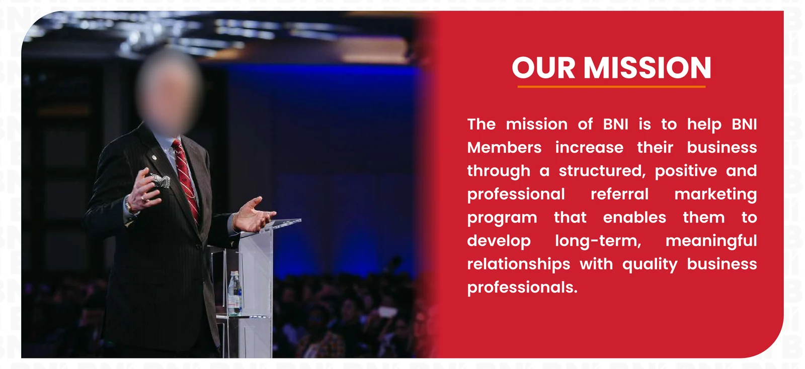
Every section opens with the same red ribbon, set on a background made of the logo repeated in very pale grey. Someone scrolling quickly can still see where each section starts.
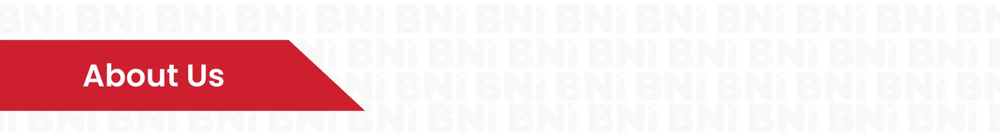
05 People
Two kinds of card for two kinds of member
Leaders and members get different cards. A leader card is tall and has room for a short biography. A member card is compact and swaps the biography for two buttons, one for email and one for phone. I have redrawn both here without the photos or sample details.
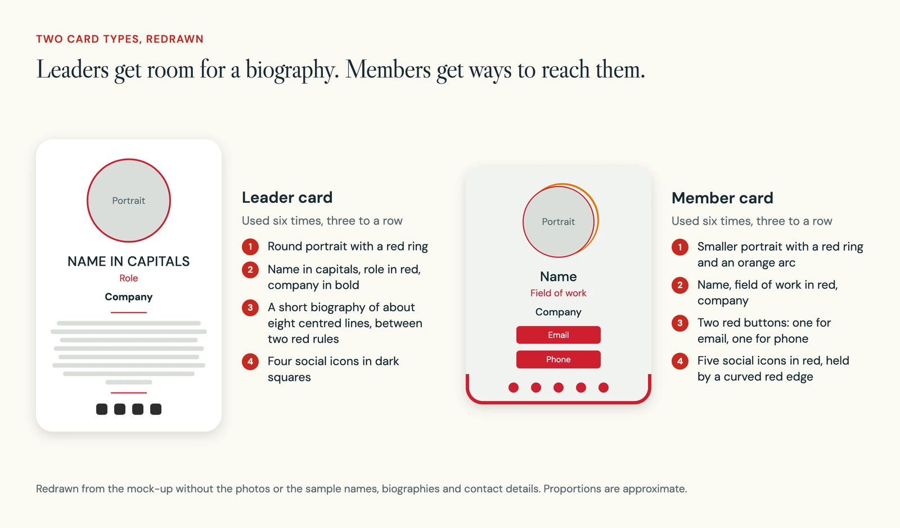
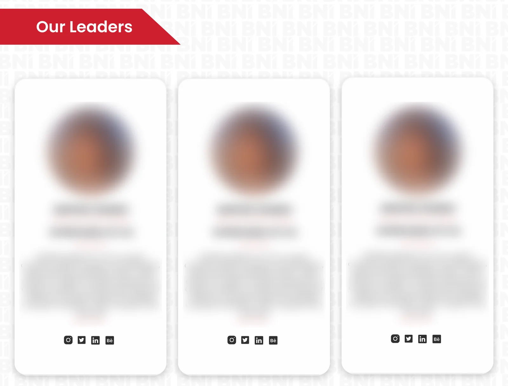
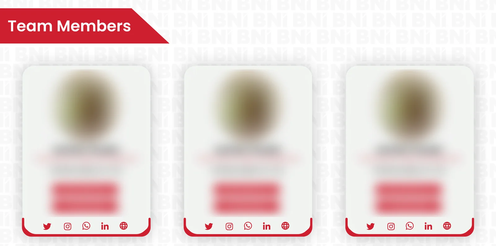
The trade-off is upkeep. A directory like this needs each member's permission, checked biographies and someone to keep it up to date. Repeated sample content, as in my mock-up, would weaken a real page.
06 Type and colour
One main typeface and one red
I measured the type on the page. Nearly all of it is one round sans in a few weights. Sizes run from 82.5 px for the contact heading down to 25 px for links, with a few smaller labels.
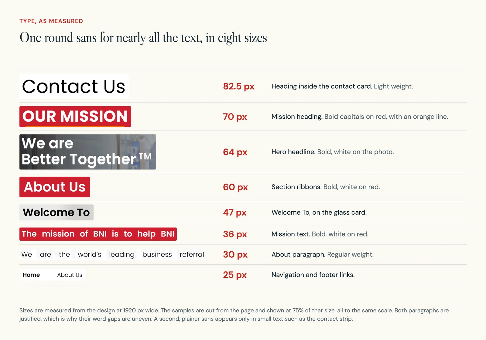
Colour is just as narrow. One red marks ribbons, buttons, the mission card and the rings round portraits. Orange appears in two small places. Everything else is white, grey or near-black.
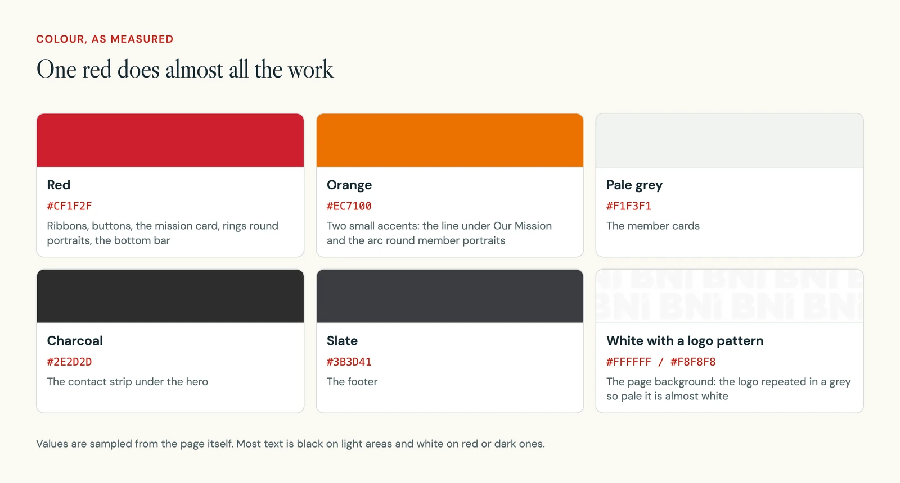
07 The way in
Three ways to reach the chapter, each one step long
A visitor can reach the chapter from the hero, from the navigation or from the footer. Each route ends at a button or a link. What comes after it was not designed.
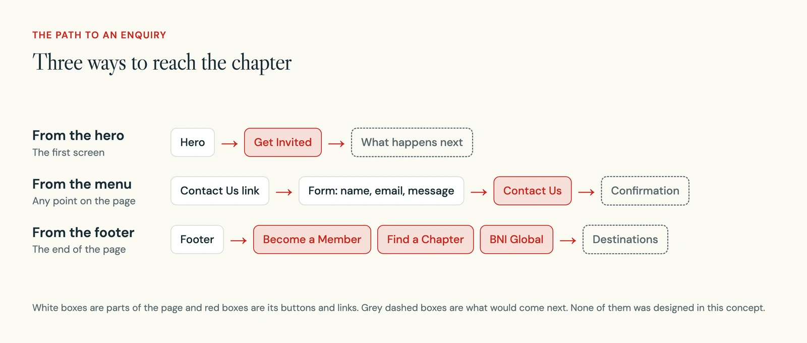
The contact form is the only route with a second step on the page. It asks for a name, an email and a message.
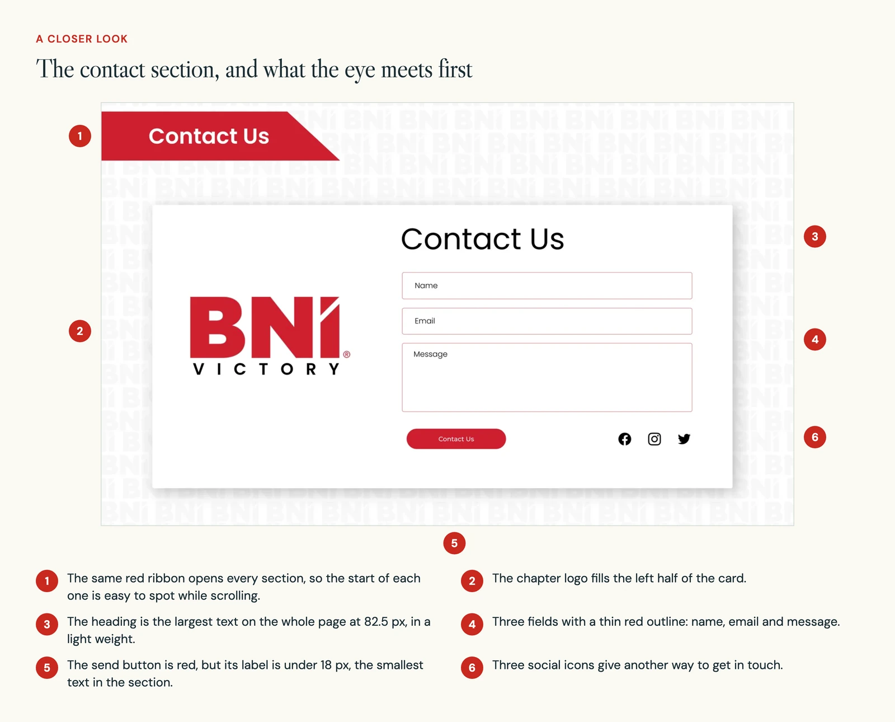
The footer repeats the four section links and adds three named for the wider organisation: BNI Global, Become a Member and Find a Chapter.
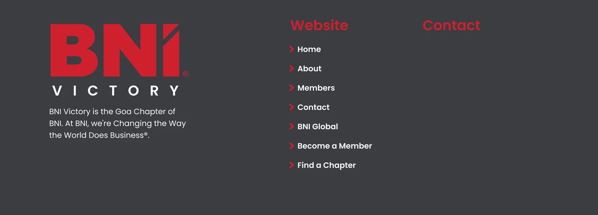
08 What comes next
The invitation needs real people and a clear next step
A page about a community is only as believable as the people on it. Before growing the directory I would confirm the chapter's details, its members' permission and how a visit works.
- Replace the sample cards with real, checked content for each member.
- Explain how a visitor meeting works before the Get Invited button, and design the screen that follows it.
- Shorten the page with a tighter summary near the top and direct links to meeting details.
- Test it. Ask a possible visitor what the chapter does, whether it suits their business, and what they expect to happen after asking for an invitation.
None of this was built or tested, so there are no results to report.
The train search comes first.